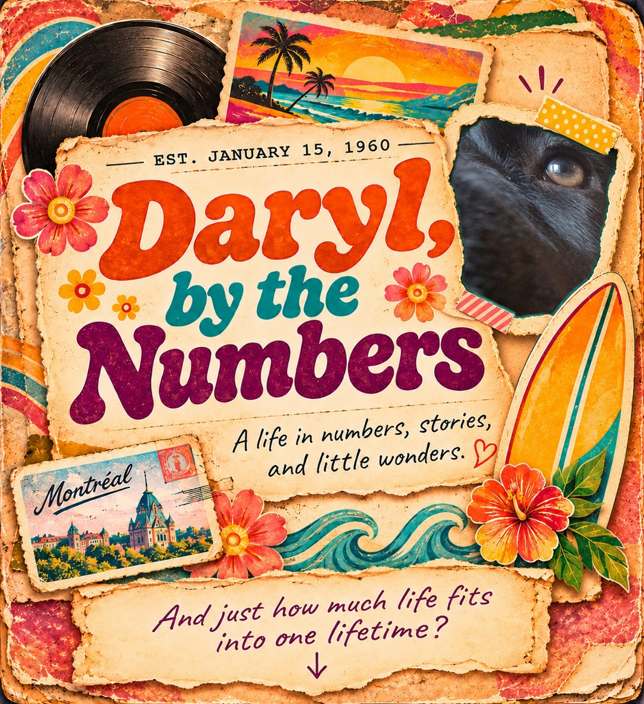

Daryl, by the Numbers
A life in numbers, stories, and little wonders.
A Life by the Numbers
Opening review only — the lifetime statistics, birthday almanac, and historical timeline are not redesigned in this pass.

A life in numbers, stories, and little wonders.
Opening review only — the lifetime statistics, birthday almanac, and historical timeline are not redesigned in this pass.